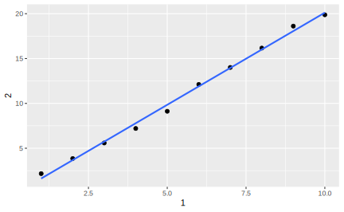

2 tibble
tidyverse 的设计理念之一是用 tibble 代替传统的 R 数据框(data.frame类)。tibble 是一种更简单的数据框，它对传统数据框的功能进行了一些修改，以便更易于使用。多数情况下，我们不再区分 tibble 和数据框这两个词 ； 如果想要强调 R 内置的传统数据框，用 data. frame 来表示。除了这里展示的知识以外，使用 vignette("tibble") 可以获得更多关于 tibble 的信息。
2.1 简介
之前介绍的所有函数几乎都将返回一个tibble，filter()、arrange()、select()、mutate()、summarize()等函数最后的结果都是一个tibble，因为它是tidyverse最底层的功能之一。由于多数其他R包使用的是标准数据框，因此经常需要将data.frame转换为tibble，可以使用as_tibble()函数来完成转换：
## iris数据集是一个data.frame
class(iris)
#> [1] "data.frame"
## 转换为tibble
(iris_tibble <- as_tibble(iris))
#> # A tibble: 150 x 5
#> Sepal.Length Sepal.Width Petal.Length Petal.Width Species
#> <dbl> <dbl> <dbl> <dbl> <fct>
#> 1 5.1 3.5 1.4 0.2 setosa
#> 2 4.9 3 1.4 0.2 setosa
#> 3 4.7 3.2 1.3 0.2 setosa
#> 4 4.6 3.1 1.5 0.2 setosa
#> 5 5 3.6 1.4 0.2 setosa
#> 6 5.4 3.9 1.7 0.4 setosa
#> # … with 144 more rows相比于 data.frame() 函数，tibble()函数的功能要少的多：它不能改变输入的类型（例如，不能将字符串转变为因子)、变量的名称,也不能创建行名称。
有些比较旧的函数不支持tibble，如果遇到这种函数，可以使用as.data.frame()转换到data.frame`上。
2.2 对比 tibble 和 data.frame
tibble 和传统 data.frame 的机理主要有三处不同：创建、打印和取子集。
2.2.1 创建
tibble()函数用于创建现代数据框：tibble ：
df <- tibble(
x = 1:3,
y = c("a","b","c")
)
df
#> # A tibble: 3 x 2
#> x y
#> <int> <chr>
#> 1 1 a
#> 2 2 b
#> 3 3 c可以发现 tibble() 不会自作聪明地更改 y 的 class 属性，它将原原本本地被当做一个字符向量处理。
而 data.frame() 函数用于创建一个传统数据框：
df <- data.frame(
x = 1:3,
y = c("a", "b", "c")
)
str(df)
#> 'data.frame': 3 obs. of 2 variables:
#> $ x: int 1 2 3
#> $ y: Factor w/ 3 levels "a","b","c": 1 2 32.2.1.1 强制转换
在 data.frame 中，为了防止 y 被强制转换为因子，必须设置 stringAsFactors = FALSE
df <- data.frame(
x = 1:3,
y = c("a", "b", "c"),
stringsAsFactors = F
)
str(df)
#> 'data.frame': 3 obs. of 2 variables:
#> $ x: int 1 2 3
#> $ y: chr "a" "b" "c"By the way, 创建tibble的另一种方法是使用tribble()函数，tribble是 transposed tibble 的缩写。tribble()是高度定制化的，就像在 Markdown 中创建表格一样，一个一个填入元素：列标题以波浪线~开头，不同列的元素之间以逗号分隔，这样就可以用易读的方式对少量数据创建一个 tibble 类型：
2.2.1.2 行标签
data.frame 支持提供一个不包含重复元素的字符向量给每行打上标签：
df <- data.frame(
age = c(35, 27, 18),
hair = c("blond", "brown", "black"),
row.names = c("Bob", "Susan", "Sam")
)
df
#> age hair
#> Bob 35 blond
#> Susan 27 brown
#> Sam 18 black
attributes(df)
#> $names
#> [1] "age" "hair"
#>
#> $class
#> [1] "data.frame"
#>
#> $row.names
#> [1] "Bob" "Susan" "Sam"row.names参数为data.frame创建了一个同名的属性，rownames()函数可以提取这个属性：
如果我们认为数据框是二维矩阵的自然拓展(不止包含数值)，那么行标签的存在似乎是很自然的，毕竟矩阵有i、j两个索引。但是矩阵和数据框有本质区别，矩阵是添加了维度属性的原子向量，数据框则是列表，我们可以对矩阵取转置，因为它们的行和列可以互换，一个矩阵的转置是另一个矩阵。数据框则是不可转置的，它的行列互换之后就不再是数据框(一行未必能构成一个原子向量)。
出于以下三个原因，我们不应该使用row.names这一属性，也不应该考虑在任何场合添加行标签：
- 元数据也是数据，所以把行标签从其他变量中抽出来单独对待不是个好主意。否则我们可能要对行标签单独发展出一套操作工具，而不能直接应用我们已经习惯的对变量的操作方法
- 行标签很多时候不能完成唯一标识观测的任务，因为
row.names要求只能传入数值或者字符串向量。如果我们想要用时间日期型数据标识观测呢？或者需要传入不止一个向量(例如标识位置同时需要经度和纬度)
- 行标签中的元素必须是唯一的，但很多场合(比如bootstrapping)中同一个对象也可能有多条记录
所以，tibble的设计思想就是不支持添加行标签，且提供了一套很方便的、处理已有行标签的工具，要么移除它，要么把它直接变成tibble中的一列：
Tools for working with row names
Description
While a tibble can have row names (e.g., when converting from a regular data frame), they are removed when subsetting with the [ operator. A warning will be raised when attempting to assign non-NULL row names to a tibble. Generally, it is best to avoid row names, because they are basically a character column with different semantics to every other column. These functions allow to you detect if a data frame has row names (has_rownames()), remove them (remove_rownames()), or convert them back-and-forth between an explicit column (rownames_to_column() and column_to_rownames()). Also included is rowid_to_column() which adds a column at the start of the dataframe of ascending sequential row ids starting at 1. Note that this will remove any existing row names.
Usage
has_rownames(.data)
remove_rownames(.data)
rownames_to_column(.data, var = "rowname")
rowid_to_column(.data, var = "rowid")
column_to_rownames(.data, var = "rowname")
Arguments
.data
A data frame.
var Name of column to use for rownames.
Value
column_to_rownames() always returns a data frame. has_rownames() returns a scalar logical. All other functions return an object of the same class as the input.
一些示例：
mtcars %>%
has_rownames()
#> [1] TRUE
mtcars %>%
remove_rownames()
#> mpg cyl disp hp drat wt qsec vs am gear carb
#> 1 21.0 6 160.0 110 3.90 2.62 16.5 0 1 4 4
#> 2 21.0 6 160.0 110 3.90 2.88 17.0 0 1 4 4
#> 3 22.8 4 108.0 93 3.85 2.32 18.6 1 1 4 1
#> 4 21.4 6 258.0 110 3.08 3.21 19.4 1 0 3 1
#> 5 18.7 8 360.0 175 3.15 3.44 17.0 0 0 3 2
#> 6 18.1 6 225.0 105 2.76 3.46 20.2 1 0 3 1
#> 7 14.3 8 360.0 245 3.21 3.57 15.8 0 0 3 4
#> 8 24.4 4 146.7 62 3.69 3.19 20.0 1 0 4 2
#> 9 22.8 4 140.8 95 3.92 3.15 22.9 1 0 4 2
#> 10 19.2 6 167.6 123 3.92 3.44 18.3 1 0 4 4
#> 11 17.8 6 167.6 123 3.92 3.44 18.9 1 0 4 4
#> 12 16.4 8 275.8 180 3.07 4.07 17.4 0 0 3 3
#> 13 17.3 8 275.8 180 3.07 3.73 17.6 0 0 3 3
#> 14 15.2 8 275.8 180 3.07 3.78 18.0 0 0 3 3
#> 15 10.4 8 472.0 205 2.93 5.25 18.0 0 0 3 4
#> 16 10.4 8 460.0 215 3.00 5.42 17.8 0 0 3 4
#> 17 14.7 8 440.0 230 3.23 5.34 17.4 0 0 3 4
#> 18 32.4 4 78.7 66 4.08 2.20 19.5 1 1 4 1
#> 19 30.4 4 75.7 52 4.93 1.61 18.5 1 1 4 2
#> 20 33.9 4 71.1 65 4.22 1.83 19.9 1 1 4 1
#> 21 21.5 4 120.1 97 3.70 2.46 20.0 1 0 3 1
#> 22 15.5 8 318.0 150 2.76 3.52 16.9 0 0 3 2
#> 23 15.2 8 304.0 150 3.15 3.44 17.3 0 0 3 2
#> 24 13.3 8 350.0 245 3.73 3.84 15.4 0 0 3 4
#> 25 19.2 8 400.0 175 3.08 3.85 17.1 0 0 3 2
#> 26 27.3 4 79.0 66 4.08 1.94 18.9 1 1 4 1
#> 27 26.0 4 120.3 91 4.43 2.14 16.7 0 1 5 2
#> 28 30.4 4 95.1 113 3.77 1.51 16.9 1 1 5 2
#> 29 15.8 8 351.0 264 4.22 3.17 14.5 0 1 5 4
#> 30 19.7 6 145.0 175 3.62 2.77 15.5 0 1 5 6
#> 31 15.0 8 301.0 335 3.54 3.57 14.6 0 1 5 8
#> 32 21.4 4 121.0 109 4.11 2.78 18.6 1 1 4 2
mtcars %>%
rownames_to_column(var = "car_type")
#> car_type mpg cyl disp hp drat wt qsec vs am gear carb
#> 1 Mazda RX4 21.0 6 160.0 110 3.90 2.62 16.5 0 1 4 4
#> 2 Mazda RX4 Wag 21.0 6 160.0 110 3.90 2.88 17.0 0 1 4 4
#> 3 Datsun 710 22.8 4 108.0 93 3.85 2.32 18.6 1 1 4 1
#> 4 Hornet 4 Drive 21.4 6 258.0 110 3.08 3.21 19.4 1 0 3 1
#> 5 Hornet Sportabout 18.7 8 360.0 175 3.15 3.44 17.0 0 0 3 2
#> 6 Valiant 18.1 6 225.0 105 2.76 3.46 20.2 1 0 3 1
#> 7 Duster 360 14.3 8 360.0 245 3.21 3.57 15.8 0 0 3 4
#> 8 Merc 240D 24.4 4 146.7 62 3.69 3.19 20.0 1 0 4 2
#> 9 Merc 230 22.8 4 140.8 95 3.92 3.15 22.9 1 0 4 2
#> 10 Merc 280 19.2 6 167.6 123 3.92 3.44 18.3 1 0 4 4
#> 11 Merc 280C 17.8 6 167.6 123 3.92 3.44 18.9 1 0 4 4
#> 12 Merc 450SE 16.4 8 275.8 180 3.07 4.07 17.4 0 0 3 3
#> 13 Merc 450SL 17.3 8 275.8 180 3.07 3.73 17.6 0 0 3 3
#> 14 Merc 450SLC 15.2 8 275.8 180 3.07 3.78 18.0 0 0 3 3
#> 15 Cadillac Fleetwood 10.4 8 472.0 205 2.93 5.25 18.0 0 0 3 4
#> 16 Lincoln Continental 10.4 8 460.0 215 3.00 5.42 17.8 0 0 3 4
#> 17 Chrysler Imperial 14.7 8 440.0 230 3.23 5.34 17.4 0 0 3 4
#> 18 Fiat 128 32.4 4 78.7 66 4.08 2.20 19.5 1 1 4 1
#> 19 Honda Civic 30.4 4 75.7 52 4.93 1.61 18.5 1 1 4 2
#> 20 Toyota Corolla 33.9 4 71.1 65 4.22 1.83 19.9 1 1 4 1
#> 21 Toyota Corona 21.5 4 120.1 97 3.70 2.46 20.0 1 0 3 1
#> 22 Dodge Challenger 15.5 8 318.0 150 2.76 3.52 16.9 0 0 3 2
#> 23 AMC Javelin 15.2 8 304.0 150 3.15 3.44 17.3 0 0 3 2
#> 24 Camaro Z28 13.3 8 350.0 245 3.73 3.84 15.4 0 0 3 4
#> 25 Pontiac Firebird 19.2 8 400.0 175 3.08 3.85 17.1 0 0 3 2
#> 26 Fiat X1-9 27.3 4 79.0 66 4.08 1.94 18.9 1 1 4 1
#> 27 Porsche 914-2 26.0 4 120.3 91 4.43 2.14 16.7 0 1 5 2
#> 28 Lotus Europa 30.4 4 95.1 113 3.77 1.51 16.9 1 1 5 2
#> 29 Ford Pantera L 15.8 8 351.0 264 4.22 3.17 14.5 0 1 5 4
#> 30 Ferrari Dino 19.7 6 145.0 175 3.62 2.77 15.5 0 1 5 6
#> 31 Maserati Bora 15.0 8 301.0 335 3.54 3.57 14.6 0 1 5 8
#> 32 Volvo 142E 21.4 4 121.0 109 4.11 2.78 18.6 1 1 4 2
mtcars %>%
rowid_to_column()
#> rowid mpg cyl disp hp drat wt qsec vs am gear carb
#> 1 1 21.0 6 160.0 110 3.90 2.62 16.5 0 1 4 4
#> 2 2 21.0 6 160.0 110 3.90 2.88 17.0 0 1 4 4
#> 3 3 22.8 4 108.0 93 3.85 2.32 18.6 1 1 4 1
#> 4 4 21.4 6 258.0 110 3.08 3.21 19.4 1 0 3 1
#> 5 5 18.7 8 360.0 175 3.15 3.44 17.0 0 0 3 2
#> 6 6 18.1 6 225.0 105 2.76 3.46 20.2 1 0 3 1
#> 7 7 14.3 8 360.0 245 3.21 3.57 15.8 0 0 3 4
#> 8 8 24.4 4 146.7 62 3.69 3.19 20.0 1 0 4 2
#> 9 9 22.8 4 140.8 95 3.92 3.15 22.9 1 0 4 2
#> 10 10 19.2 6 167.6 123 3.92 3.44 18.3 1 0 4 4
#> 11 11 17.8 6 167.6 123 3.92 3.44 18.9 1 0 4 4
#> 12 12 16.4 8 275.8 180 3.07 4.07 17.4 0 0 3 3
#> 13 13 17.3 8 275.8 180 3.07 3.73 17.6 0 0 3 3
#> 14 14 15.2 8 275.8 180 3.07 3.78 18.0 0 0 3 3
#> 15 15 10.4 8 472.0 205 2.93 5.25 18.0 0 0 3 4
#> 16 16 10.4 8 460.0 215 3.00 5.42 17.8 0 0 3 4
#> 17 17 14.7 8 440.0 230 3.23 5.34 17.4 0 0 3 4
#> 18 18 32.4 4 78.7 66 4.08 2.20 19.5 1 1 4 1
#> 19 19 30.4 4 75.7 52 4.93 1.61 18.5 1 1 4 2
#> 20 20 33.9 4 71.1 65 4.22 1.83 19.9 1 1 4 1
#> 21 21 21.5 4 120.1 97 3.70 2.46 20.0 1 0 3 1
#> 22 22 15.5 8 318.0 150 2.76 3.52 16.9 0 0 3 2
#> 23 23 15.2 8 304.0 150 3.15 3.44 17.3 0 0 3 2
#> 24 24 13.3 8 350.0 245 3.73 3.84 15.4 0 0 3 4
#> 25 25 19.2 8 400.0 175 3.08 3.85 17.1 0 0 3 2
#> 26 26 27.3 4 79.0 66 4.08 1.94 18.9 1 1 4 1
#> 27 27 26.0 4 120.3 91 4.43 2.14 16.7 0 1 5 2
#> 28 28 30.4 4 95.1 113 3.77 1.51 16.9 1 1 5 2
#> 29 29 15.8 8 351.0 264 4.22 3.17 14.5 0 1 5 4
#> 30 30 19.7 6 145.0 175 3.62 2.77 15.5 0 1 5 6
#> 31 31 15.0 8 301.0 335 3.54 3.57 14.6 0 1 5 8
#> 32 32 21.4 4 121.0 109 4.11 2.78 18.6 1 1 4 22.2.1.3 循环
tibble()会循环使用那些长度为1的列，将其自动扩展到最长的列的长度。而长度不为1，且和其他列元素个数不同的列不会被循环 ； data.frame()会自动循环长度可被最长一列的长度整除的列：
tibble(x = 1:4, y = 1)
#> # A tibble: 4 x 2
#> x y
#> <int> <dbl>
#> 1 1 1
#> 2 2 1
#> 3 3 1
#> 4 4 1
tibble(x = 1:4, y = 1:2)
#> Error: Tibble columns must have consistent lengths, only values of length one are recycled:
#> * Length 2: Column `y`
#> * Length 4: Column `x`
data.frame(x = 1:4, y = 1:2)
#> x y
#> 1 1 1
#> 2 2 2
#> 3 3 1
#> 4 4 2
data.frame(x = 1:4, y = 1:3)
#> Error in data.frame(x = 1:4, y = 1:3): arguments imply differing number of rows: 4, 32.2.1.4 无效变量名称
tibble的一个很大特色是可以使用在R中无效的变量名称，即不符合变量命名规定的名称可以在tibble中成为列名，实际上这个规则约束了R中所有“名称”的设定。R规定名称只能包含字母、数字、点.和下划线_，必须以字母开头，数字不能跟在.之后，也不能和R中保留的关键字重名(see ?Reserved)。
如果想创建不合法的列名，可以用反引号```将它们括起来：
tb <- tibble(
`:)` = "smile",
` ` = "space",
`2000` = "number"
)
tb
#> # A tibble: 1 x 3
#> `:)` ` ` `2000`
#> <chr> <chr> <chr>
#> 1 smile space number类似地，如果想要在 ggolot2 或者其他tidyverse包中使用这些名称特殊的变量，也需要用反引号括起来。
相比之下，data.frame()会依据make.names()的规则自行更改无效的列名称(除非设置check.names = FALSE)。如果你的名称不以字母开头(字母的界定依据当前电脑的地域设置，但不能超越ASCII字符集)，这个函数会地添加X作为前缀；如果包含特殊字符，用.代替；未给出的名称用NA代替；与R的保留关键字重名的，在后面添加.:
2.2.1.5 变量引用
最后，我们可以在创建tibble创建过程中就引用其中的变量，因为变量在tibble中是被从左到右依次添加的(而data.frame()不支持这一点)：
2.2.2 打印
tibble 的打印方法进行了优化，只显示前 10 行结果，显示列的数目将自动适应屏幕的宽度，这种打印方式非常适合大数据集。除了打印列名，tibble 还会第一行的下面打印出列的类型，这项功能有些类似于 str() 函数
tibble(
a = lubridate::now() + runif(1e3) * 96400,
b = lubridate::today() + runif(1e3) * 30,
c = 1:1e3,
d = runif(1e3),
e = sample(letters,1e3, replace = T)
)
#> # A tibble: 1,000 x 5
#> a b c d e
#> <dttm> <date> <int> <dbl> <chr>
#> 1 2019-12-12 21:49:54 2019-12-14 1 0.392 i
#> 2 2019-12-12 14:53:28 2019-12-16 2 0.409 p
#> 3 2019-12-12 09:50:02 2019-12-27 3 0.944 t
#> 4 2019-12-12 14:34:31 2020-01-05 4 0.614 z
#> 5 2019-12-12 14:49:10 2019-12-28 5 0.672 f
#> 6 2019-12-12 15:43:59 2019-12-22 6 0.113 q
#> # … with 994 more rows在打印大数据框时，tibble的这种设计避免了输出一下子占据控制台的很多行。
有时需要比默认显示更多的输出，这是要设置几个参数。
首先，可以明确使用print()函数来打印数据框（实际上是print.tbl())，并控制打印的行数（n）和显示的宽度（width）。width = Inf可以显示出所有列:
nycflights13::flights %>%
print(n = 10, width = Inf)
#> # A tibble: 336,776 x 19
#> year month day dep_time sched_dep_time dep_delay arr_time sched_arr_time
#> <int> <int> <int> <int> <int> <dbl> <int> <int>
#> 1 2013 1 1 517 515 2 830 819
#> 2 2013 1 1 533 529 4 850 830
#> 3 2013 1 1 542 540 2 923 850
#> 4 2013 1 1 544 545 -1 1004 1022
#> 5 2013 1 1 554 600 -6 812 837
#> 6 2013 1 1 554 558 -4 740 728
#> 7 2013 1 1 555 600 -5 913 854
#> 8 2013 1 1 557 600 -3 709 723
#> 9 2013 1 1 557 600 -3 838 846
#> 10 2013 1 1 558 600 -2 753 745
#> arr_delay carrier flight tailnum origin dest air_time distance hour minute
#> <dbl> <chr> <int> <chr> <chr> <chr> <dbl> <dbl> <dbl> <dbl>
#> 1 11 UA 1545 N14228 EWR IAH 227 1400 5 15
#> 2 20 UA 1714 N24211 LGA IAH 227 1416 5 29
#> 3 33 AA 1141 N619AA JFK MIA 160 1089 5 40
#> 4 -18 B6 725 N804JB JFK BQN 183 1576 5 45
#> 5 -25 DL 461 N668DN LGA ATL 116 762 6 0
#> 6 12 UA 1696 N39463 EWR ORD 150 719 5 58
#> 7 19 B6 507 N516JB EWR FLL 158 1065 6 0
#> 8 -14 EV 5708 N829AS LGA IAD 53 229 6 0
#> 9 -8 B6 79 N593JB JFK MCO 140 944 6 0
#> 10 8 AA 301 N3ALAA LGA ORD 138 733 6 0
#> time_hour
#> <dttm>
#> 1 2013-01-01 05:00:00
#> 2 2013-01-01 05:00:00
#> 3 2013-01-01 05:00:00
#> 4 2013-01-01 05:00:00
#> 5 2013-01-01 06:00:00
#> 6 2013-01-01 05:00:00
#> 7 2013-01-01 06:00:00
#> 8 2013-01-01 06:00:00
#> 9 2013-01-01 06:00:00
#> 10 2013-01-01 06:00:00
#> # … with 3.368e+05 more rows2.2.3 取子集
取子集(Subsetting)时的行为又是区分data.frame和tibble很重要的一个特性。简单来讲，R中有两种取子集的系统。一种是用[在原子向量、列表、矩阵、数组和数据框中提取任意数量的元素，一种是用[[或者$在以上对象中提取单个元素。
对于传统的数据框data.frame在这两种方式上均有缺陷：
- 当想用
df[, vars]在data.frame中提取变量时，如果vars包含多个变量，则返回一个数据框；如果vars只包含一个变量，则返回一个向量(因为[不要求必须提取多于一个元素)。这种不一致性有时这会导致很多bug，因为很多函数不能作用于向量。
df <- data.frame(
x = rnorm(10),
y = rnorm(10),
z = rnorm(10)
)
## 向量
df[,"x"]
#> [1] -1.5723 0.8783 -0.0461 -0.0778 0.1201 0.7874 -0.7307 -0.3133 -0.6744
#> [10] -0.9759
## 数据框
df[,c("x","y")]
#> x y
#> 1 -1.5723 1.442
#> 2 0.8783 -0.738
#> 3 -0.0461 -0.280
#> 4 -0.0778 0.451
#> 5 0.1201 1.437
#> 6 0.7874 1.531
#> 7 -0.7307 0.728
#> 8 -0.3133 0.018
#> 9 -0.6744 -0.108
#> 10 -0.9759 1.533
## drop = FALSE始终返回数据框
df[,"x", drop = FALSE]
#> x
#> 1 -1.5723
#> 2 0.8783
#> 3 -0.0461
#> 4 -0.0778
#> 5 0.1201
#> 6 0.7874
#> 7 -0.7307
#> 8 -0.3133
#> 9 -0.6744
#> 10 -0.9759- 当想用
df$x提取出变量x时，如果x不在data.frame中，data.frame会返回一个名字以x开始的变量(这种行为被称为部分匹配(partial matching))，如果不存在这样的变量，则返回NULL。这使得我们很容易选取到错误的变量
tibble 在这两点缺陷上做了改进。首先，当 df[, vars]作用于tibble 时，无论 vars 包含多少个变量，返回值总是一个tibble:
df <- tibble(
x = runif(5),
y = rnorm(5)
)
df[, c("x","y")]
#> # A tibble: 5 x 2
#> x y
#> <dbl> <dbl>
#> 1 0.548 0.281
#> 2 0.804 -0.272
#> 3 0.837 0.388
#> 4 0.930 1.79
#> 5 0.785 -0.308
df[, "x"]
#> # A tibble: 5 x 1
#> x
#> <dbl>
#> 1 0.548
#> 2 0.804
#> 3 0.837
#> 4 0.930
#> 5 0.785其次，使用$或者[[]]时,tibble不会进行部分匹配，如果该变量不存在，直接报错：
另外，[[可以按名称和位置提取变量，$只能按名称提取变量，但可以减少一些输入：
## 按名称提取
df$x
#> [1] 0.548 0.804 0.837 0.930 0.785
df[["x"]]
#> [1] 0.548 0.804 0.837 0.930 0.785
## 按位置提取
df[[1]] ## 提取第一列
#> [1] 0.548 0.804 0.837 0.930 0.7852.3 练习
tibble？
可以直接根据打印时的显示来判断。
更一般地，直接使用 class() 函数进行判断, 一个传统数据框将返回“data.frame” ，而tibble返回c("tbl_df", "tbl", "data.frame")
class(mtcars)
#> [1] "data.frame"
class(ggplot2::diamonds)
#> [1] "tbl_df" "tbl" "data.frame"
class(nycflights13::flights)
#> [1] "tbl_df" "tbl" "data.frame"Exercise 2.2 在以下的数据框中练习如何引用不符合语法规则的变量名
annoying <- tibble(
`1` = 1:10,
`2` = `1`*2 + rnorm(length(`1`))
)
## 提取名称为1的变量（不可以用annoying[[`1`]]）
annoying$`1`
#> [1] 1 2 3 4 5 6 7 8 9 10
## 绘制表示变量1和变量2关系的散点图
ggplot(annoying,mapping = aes(x = `1`, y = `2`)) +
geom_point() +
geom_smooth(method = "lm",se = F)
## 创建一个名称为3的新列，其值为列2除以列1
mutate(annoying,`3`= `2`/`1`)
#> # A tibble: 10 x 3
#> `1` `2` `3`
#> <int> <dbl> <dbl>
#> 1 1 2.17 2.17
#> 2 2 3.85 1.93
#> 3 3 5.58 1.86
#> 4 4 7.20 1.80
#> 5 5 9.12 1.82
#> 6 6 12.1 2.02
#> # … with 4 more rows
## 将前两列重新命名为one、two
(annoying <- rename(annoying,one = `1`, two = `2`))
#> # A tibble: 10 x 2
#> one two
#> <int> <dbl>
#> 1 1 2.17
#> 2 2 3.85
#> 3 3 5.58
#> 4 4 7.20
#> 5 5 9.12
#> 6 6 12.1
#> # … with 4 more rowstibble::enframe()函数的功能是什么？什么时候可以使用这个函数？
enframe()接受一个具名向量(named vectors)转换为一个tibble：
enframe(c(a = 5, b = 7))
#> # A tibble: 2 x 2
#> name value
#> <chr> <dbl>
#> 1 a 5
#> 2 b 7
enframe(c(a = 1:3, b = 2:4, c = 3:5))
#> # A tibble: 9 x 2
#> name value
#> <chr> <int>
#> 1 a1 1
#> 2 a2 2
#> 3 a3 3
#> 4 b1 2
#> 5 b2 3
#> 6 b3 4
#> # … with 3 more rowstibble() 在这种情况下只会识别一个完整的向量